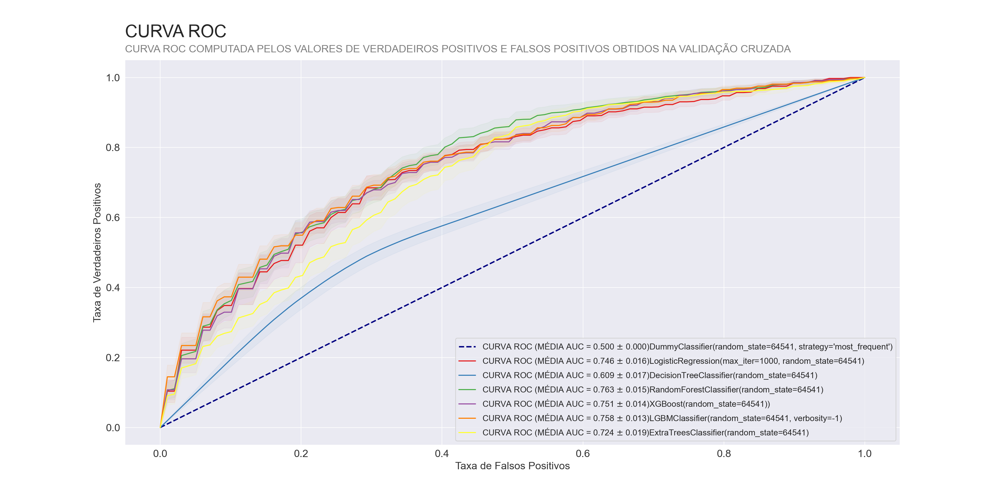
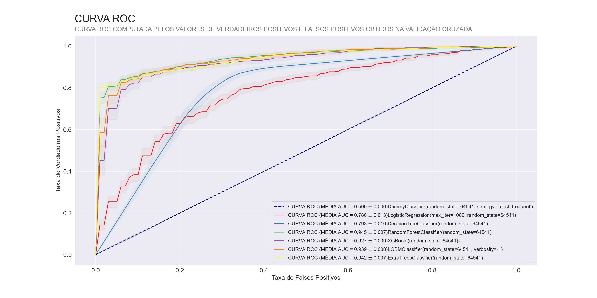
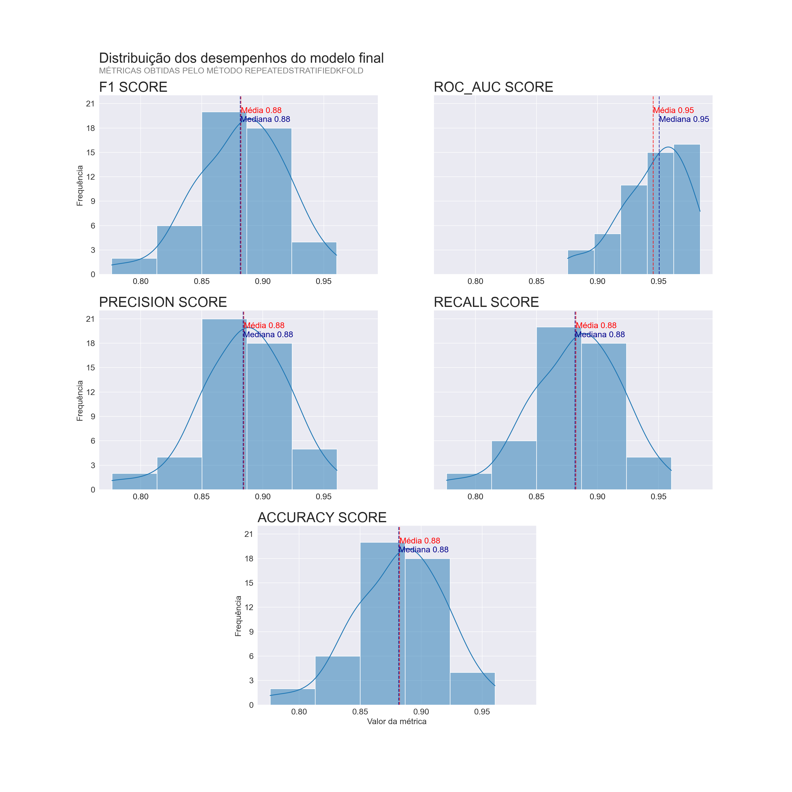
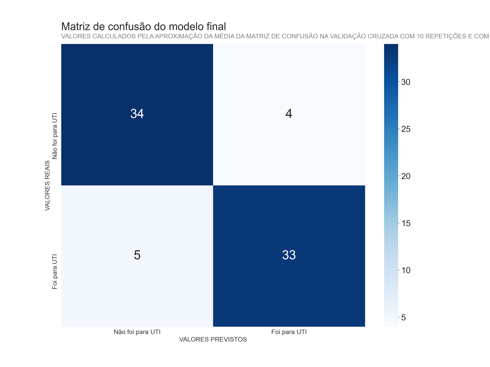

Previsões

Resumo
Após realizar o pré-processamento e a análise exploratória dos dados disponibilizados pelo Hospital Sírio-Libanês no kaggle, neste notebook o foco foi na solução do problema, ou seja, foram testados modelos de Machine Learning a fim de resolver o problema notificado pelo hospital com a melhor eficácia possível. Para isso foram testados 6 modelos diferentes de classificação, aplicando técnicas de reamostragem e de seleção de variáveis.
Contexto do problema
O ano de 2020 começou de uma maneira completamente inesperada, o mundo foi atingido por uma das maiores crises sanitárias da história contemporânea, e uma palavra tomou conta das notícias nos jornais e mídias sociais brasileiras, “Leito”, a superlotação dos hopitais e a falta de leitos se tornou normal em todo o Brasil, nos anos de 2020 e 2021. Nesse contexto, o objetivo foi, a partir dos dados referente aos pacientes que sofreram da doença, criar um modelo capaz de prever se um paciente precisará de UTI nas duas primeiras horas que esse paciente é admitido no hospital.
Escopo do notebook
- Importação dos pacotes
- Importação das funções locais
- Leitura dos dados preprocessados
- Métricas de avaliação
- Primeiros modelos
- Reamostragem
- Otimização
- Modelo final
- Resultados finais
Importação dos pacotes
Importações das funções locais
Leitura dos dados pré-processados
## AGE_ABOVE65 DISEASE GROUPING 1 ... AGE_ABOVE_50th AGE_ABOVE_80th
## 0 1 0 ... 1 0
## 1 0 0 ... 0 0
## 2 0 0 ... 0 0
## 3 0 0 ... 0 0
## 4 0 0 ... 0 0
##
## [5 rows x 61 columns]Métricas de avaliação
A escolha das métricas para escolher o melhor modelo é uma escolha crucial para selecionar o modelo que mais pode ajudar os problemas reais encontrados no hospital. No problema em questão, essas métricas devem ser muito bem escolhidas, uma vez que estamos tratando de dados reais relacionados a saúde, e cada erro pode significar uma vida. Por esta razão, vou utilizar as seguintes métricas em todos os testes:
- ROC AUC
- F1 score
- Recall
- Precisão
- Acurácia
Todas as métricas serão utilizadas para acompanhar os resultados e não termos um modelo tendencioso, no entanto, as métricas que serão utilizadas para selecionar os modelos será, primeiramente, a ROC AUC para selecionar os dois melhores modelos sem nenhuma otimização, e, posteriormente, será realizada a otimização de hiperparâmetros com base na F1 score.
ROC AUC
A métrica ROC AUC é utilizada para problemas de classificação binárias e consiste na área abaixo da curva ROC do modelo. Essa curva é gerada através das taxas de valores verdadeiros positivos e falsos positivos previstos pelo modelo. Ela consegue mensurar o quão bem um modelo consegue separar os dados em relação a variável alvo, no nosso caso, a capacidade de um modelo em separar, através de probabilidades, os pacientes que precisaram de cuidados intensivos dos pacientes que não precisaram de cuidados intensivos. Por esta razão, essa métrica vai ser utilizada para selecionar os dois melhores modelos que possuem a maior capacidade de separar esses dois grupos.

F1 score
A métrica F1 score combina a precisão, que mede, entre os valores classificados, quantos estavam corretos, e o recall, que mede entre, os valores corretos , quantos foram classificados corretamente. O principal fator que utilizarei essa métrica para realizar a otimização dos modelos é que ela sempre da um peso maior para o pior valor entre a precisão e o recall, ou seja, ela é mais sensível em modelos enviesados que possuem uma tendência maior de prever um determinado grupo. Com isso, tendo um maior valor dessa métrica, temos mais chances de um maior equilíbrio entre as demais.
OBS: FOI UTILIZADA A MÉDIA MACRO DA F1 SCORE PARA REALIZAR ESSA OTIMIZAÇÃO
Validação cruzada
Além de selecionar as métricas, devemos ter a maior certeza possível do resultado obtido pelo modelo, tentando excluir ao máximo a aleatoriedade na hora de testá-los. Para isso utilizarei uma validação cruzada em todos os testes.
A validação cruzada é um método estatístico usado para estimar a habilidade dos modelos de aprendizado de máquina. Tem o objetivo de resumir a performance de um modelo de Machine Learning da maneira mais realista possível tentando generalizar ao máximo os testes. Essa técnica consiste em realizar divisões dentro do dataset inteiro gerando vários subconjuntos dos dados e, posteriormente, realizar treinamentos e testes alternando o subconjunto que será destinado aos testes (utilizando os demais para treino), e dessa forma calcular as métricas de diferentes combinações dos dados destinados para treino e teste.

Porém realizar essa divisão de qualquer maneira pode criar um viés dependendo das proporções das classes da variável alvo nos subconjuntos, para isso podemos estabelecer um critério na hora dessa divisão, e o critério utilizado será tentar manter a mesma proporção, ou muito próximas, das classes 0 e 1(foi ou não foi para UTI) em todos os subconjuntos.
Além disso, como foi visto na análise exploratória(notebooks/Analise_explotaroria), o nosso dataset pré-processado possui informações de 294 pacientes, o que é um número pequeno de observações, e para tentar diminuir o efeito desse problema podemos realizar essa validação cruzada diversas vezes, e, a cada vez, dividir novamente o conjunto de dados em subconjuntos diferentes de forma aleatória. Para isso vou utilizar a classe RepeatedStratifiedKFold( ) do pacote sklearn.model_selection, e ,dessa forma, realizar a validação cruzada da seguinte maneira:
- 1 - Os dados serão embaralhados
- 2 - Os dados serão divididos em 5 subconjuntos mantendo a mesma proporção da variável alvo(“ICU”)
- 3 - O processo será realizado 10 vezes
Para realizar esse processo criei uma classe que irá repetir esses passos da mesma forma e com a mesma semente de números aleatórios, essa classe recebe o modelo e o conjunto de dados inteiro, embaralha esses dados de forma aleatória e separa em X(variáveis preditoras) e y(variáviel resposta). Essa classe possui uma função cross_val( ) para realizar essa validação calculando as métricas da seguinte forma:
- As métricas ROC AUC e Acurácia serão calculadas a cada treinamento e seus resultados serão salvos como atributos, além disso será calculado a média e o desvio padrão amostral construindo um intervalo de 95% de confiança para a média
- As métricas F1, precisão e recall serão calculadas da mesma maneira acima, porém serão utilizadas a média MACRO dessas métricas
- Serão calculadas as matrizes de confusão a cada treinamento, somando as, e, por fim será calculada a média dos elementos dessas matrizes
- Além disso serão calculadas as médias das métricas F1, precisão e recall para cada classe da variável alvo através da média das matrizes de confusão > Para calcular o intevalo de confiança da média foi usada a fórmula:
\[\mu = \bar{x} \pm \frac{\sigma}{\sqrt{n}}\]
> Considerando desvio padrão amostral das métricas e o tamanho igual a 50 pois o processo foi repetido 10 vezes e foram realizadas 5 divisões(5*10)
Nessa classe foram definidas algumas funções para visualização dos resultados de forma mais fácil, abaixo segue o docstring inteiro da classe:
##
## Classe que recebe um modelo de machine learning, os dados que serão realizados os treinamentos e previsões, com isso,
## embaralha esses dados e separa em um conjunto de dados para as variáveis preditoras(x) e a variável de resposta(y).
## Realiza uma validação cruzada através da função cross_val() e imprime seus resultados pela função report(),
## plota a curva roc pela função plot_roc_curve(), plota os histogramas das métricas calculadas pela função hist_metrics()
## e plota a média das matrizes de confusão pela função plot_confusion().
## Primeiros modelos
Ao se escolher o melhor modelo de Machine Learning precisamos ter um modelo de comparação para se ter um ponto de partida nas análises e comparações. Para isso precisamos de um modelo “Baseline”, um modelo mais simples que nos da uma referência do que é um resultado bom e do que é um resultado ruim. Para isso vou utilizar o modelo DummyClassifier, este modelo irá sempre chutar para os dados de teste a classe mais frequente no dataset de treino.
Posteriormente serão testados os seguintes modelos de classificação:
| Modelo | Pacote | Método |
|---|---|---|
| LogisticRegression | sklearn.linear_model | Regressão Logística |
| DecisionTreeClassifier | sklearn.tree | Árvore de decisão |
| RandomForestClassifier | sklearn.ensemble | Ensemble |
| ExtraTreesClassifier | sklearn.ensemble | Ensemble |
| XGBClassifier | pacote xgboost | Ensemble |
| LGBMClassifier | pacote lightgbm | Ensemble |
Método Ensemble : esse método consiste em combinar diversos modelos mais simples afim de criar um modelo robusto que utiliza várias técnicas estatísticas.
Obs : Todos os modelos desse tipo testados no notebook são baseados em árvores de decisão.
Baseline
Vamos calcular agora as métricas que servirão de base de comparação. Como estarei utilizando o DummyClassifier( ) não precisaria de uma validação cruzada, já que ao dividir os subconjuntos usando o método “RepeatedStratifiedKFold” a proporção da classe de resposta será sempre a mesma, e, portanto, os valores previstos serão sempre os mesmos, no entanto utilizarei a classe Classifier( ) para tornar o processo automático e calcular todas as métricas de uma vez, além disso, como não é um modelo computacionalmente custoso, não vejo problema.
## 0%| | 0/50 [00:00<?, ?it/s]
## 10 repetições de Validação Cruzada com 5 divisões no dataset
## ----------------------------------------------------------------------------------
## CLASSIFICADOR : DummyClassifier(random_state=64541, strategy='most_frequent')
## ----------------------------------------------------------------------------------
## Métricas no dataset de teste:
## Intervalo de 95% da média | Média por classe
## -------------------------------------|--------------------------------------------
## ROC AUC MÉDIA : 0.500 ± 0.000 |
## ACURÁCIA MÉDIA : 0.643 ± 0.001 |
## -------------------------------------|--------------------------------------------
## MÉDIA MACRO |CLASSE 0 |CLASSE 1
## ----------------------------------------------------------------------------------
## PRECISÃO MÉDIA : 0.321 ± 0.000 |0.643 |nan
## RECALL MÉDIO : 0.500 ± 0.000 |1.000 |0.000
## F1-SCORE MÉDIO : 0.391 ± 0.000 |0.783 |nan
##
## TEMPO MÉDIO DE TREINAMENTO:0.001 segundosAgora que calculamos as métricas do modelo base, qualquer modelo que tiver uma média da curva ROC menor do que 0.5 será desconsiderado.
OBS : No resultado das métricas do baseline nota-se que os resultados das médias para classe 1 foram valores nulos ou zero, isso é porque como a classe 0 é a mais frequente, ele preveu que ninguém ia para UTI em todos os casos, e com isso na hora de calcular as métricas houveram divisões por zero para o F1 score e precisão, e valor zero no numerador para o recall.
LogisticRegression
## 0%| | 0/50 [00:00<?, ?it/s]
## 10 repetições de Validação Cruzada com 5 divisões no dataset
## ----------------------------------------------------------------------------------
## CLASSIFICADOR : LogisticRegression(max_iter=1000, random_state=64541)
## ----------------------------------------------------------------------------------
## Métricas no dataset de teste:
## Intervalo de 95% da média | Média por classe
## -------------------------------------|--------------------------------------------
## ROC AUC MÉDIA : 0.746 ± 0.016 |
## ACURÁCIA MÉDIA : 0.697 ± 0.018 |
## -------------------------------------|--------------------------------------------
## MÉDIA MACRO |CLASSE 0 |CLASSE 1
## ----------------------------------------------------------------------------------
## PRECISÃO MÉDIA : 0.674 ± 0.023 |0.729 |0.605
## RECALL MÉDIO : 0.639 ± 0.019 |0.842 |0.436
## F1-SCORE MÉDIO : 0.642 ± 0.020 |0.781 |0.507
##
## TEMPO MÉDIO DE TREINAMENTO:0.071 segundosVemos que com uma regressão logística tivemos uma ROC AUC razoável, porém em relação às demais métricas parece que o modelo se deu bem melhor para prever dados da classe 0, correspondentes aos pacientes que não foram para UTI, do que da classe 1, onde tivemos um recall de apenas 0,436, o que significa que o modelo está classificando muitas pessoas que precisaram de UTI como se não fossem precisar, o que é um erro perigosíssimo, uma vez que em uma situação real cada erro desses pode significar uma vida.
DecisionTreeClassifier
## 0%| | 0/50 [00:00<?, ?it/s]
## 10 repetições de Validação Cruzada com 5 divisões no dataset
## ----------------------------------------------------------------------------------
## CLASSIFICADOR : DecisionTreeClassifier(random_state=64541)
## ----------------------------------------------------------------------------------
## Métricas no dataset de teste:
## Intervalo de 95% da média | Média por classe
## -------------------------------------|--------------------------------------------
## ROC AUC MÉDIA : 0.609 ± 0.017 |
## ACURÁCIA MÉDIA : 0.641 ± 0.016 |
## -------------------------------------|--------------------------------------------
## MÉDIA MACRO |CLASSE 0 |CLASSE 1
## ----------------------------------------------------------------------------------
## PRECISÃO MÉDIA : 0.612 ± 0.017 |0.720 |0.498
## RECALL MÉDIO : 0.609 ± 0.017 |0.723 |0.494
## F1-SCORE MÉDIO : 0.608 ± 0.017 |0.721 |0.496
##
## TEMPO MÉDIO DE TREINAMENTO:0.006 segundosO modelo DescisionTreeClassifier se saiu pior ainda do que a regressão logística, e apresentou os mesmos padrões, em que teve muita dificuldade de prever dados da classe 1, e dessa vez obteve todas as métricas dessa classe abaixo de 0,5.
RandomForestClassifier
## 0%| | 0/50 [00:00<?, ?it/s]
## 10 repetições de Validação Cruzada com 5 divisões no dataset
## ----------------------------------------------------------------------------------
## CLASSIFICADOR : RandomForestClassifier(random_state=64541)
## ----------------------------------------------------------------------------------
## Métricas no dataset de teste:
## Intervalo de 95% da média | Média por classe
## -------------------------------------|--------------------------------------------
## ROC AUC MÉDIA : 0.763 ± 0.015 |
## ACURÁCIA MÉDIA : 0.705 ± 0.014 |
## -------------------------------------|--------------------------------------------
## MÉDIA MACRO |CLASSE 0 |CLASSE 1
## ----------------------------------------------------------------------------------
## PRECISÃO MÉDIA : 0.684 ± 0.019 |0.734 |0.622
## RECALL MÉDIO : 0.648 ± 0.015 |0.849 |0.447
## F1-SCORE MÉDIO : 0.652 ± 0.017 |0.788 |0.520
##
## TEMPO MÉDIO DE TREINAMENTO:0.201 segundosNo modelo RandomForestClassifier obteve uma pequena melhora na ROC AUC, porém ainda existe muita dificuldade ao prever se o paciente precisará ir para UTI, com um recall de 0,447 para esta classe.
ExtraTreesClassifier
## 0%| | 0/50 [00:00<?, ?it/s]
## 10 repetições de Validação Cruzada com 5 divisões no dataset
## ----------------------------------------------------------------------------------
## CLASSIFICADOR : ExtraTreesClassifier(random_state=64541)
## ----------------------------------------------------------------------------------
## Métricas no dataset de teste:
## Intervalo de 95% da média | Média por classe
## -------------------------------------|--------------------------------------------
## ROC AUC MÉDIA : 0.724 ± 0.019 |
## ACURÁCIA MÉDIA : 0.667 ± 0.016 |
## -------------------------------------|--------------------------------------------
## MÉDIA MACRO |CLASSE 0 |CLASSE 1
## ----------------------------------------------------------------------------------
## PRECISÃO MÉDIA : 0.634 ± 0.023 |0.703 |0.551
## RECALL MÉDIO : 0.600 ± 0.017 |0.834 |0.366
## F1-SCORE MÉDIO : 0.600 ± 0.019 |0.763 |0.440
##
## TEMPO MÉDIO DE TREINAMENTO:0.165 segundosCom o modelo ExtraTreesClassifier mais uma vez o mesmo problema para prever a classe 1, dessa vez com o pior recall até agora de 0,366.
XGBClassifier
## 0%| | 0/50 [00:00<?, ?it/s]
## 10 repetições de Validação Cruzada com 5 divisões no dataset
## ----------------------------------------------------------------------------------
## CLASSIFICADOR : XGBClassifier(base_score=0.5, booster='gbtree', colsample_bylevel=1,
## colsample_bynode=1, colsample_bytree=1, gamma=0, gpu_id=-1,
## importance_type='gain', interaction_constraints='',
## learning_rate=0.300000012, max_delta_step=0, max_depth=6,
## min_child_weight=1, missing=nan, monotone_constraints='()',
## n_estimators=100, n_jobs=4, num_parallel_tree=1,
## random_state=64541, reg_alpha=0, reg_lambda=1, scale_pos_weight=1,
## subsample=1, tree_method='exact', validate_parameters=1,
## verbosity=0)
## ----------------------------------------------------------------------------------
## Métricas no dataset de teste:
## Intervalo de 95% da média | Média por classe
## -------------------------------------|--------------------------------------------
## ROC AUC MÉDIA : 0.751 ± 0.014 |
## ACURÁCIA MÉDIA : 0.712 ± 0.013 |
## -------------------------------------|--------------------------------------------
## MÉDIA MACRO |CLASSE 0 |CLASSE 1
## ----------------------------------------------------------------------------------
## PRECISÃO MÉDIA : 0.691 ± 0.017 |0.755 |0.614
## RECALL MÉDIO : 0.670 ± 0.014 |0.817 |0.524
## F1-SCORE MÉDIO : 0.674 ± 0.014 |0.785 |0.565
##
## TEMPO MÉDIO DE TREINAMENTO:0.105 segundosAgora com o modelo XGBClassifier() fica evidente, mais uma vez, que, independente do modelo testado, estamos tendo um problema enorme em previsões da classe 1.
LGBMClassifier
## 0%| | 0/50 [00:00<?, ?it/s]
## 10 repetições de Validação Cruzada com 5 divisões no dataset
## ----------------------------------------------------------------------------------
## CLASSIFICADOR : LGBMClassifier(random_state=64541, verbosity=-1)
## ----------------------------------------------------------------------------------
## Métricas no dataset de teste:
## Intervalo de 95% da média | Média por classe
## -------------------------------------|--------------------------------------------
## ROC AUC MÉDIA : 0.758 ± 0.013 |
## ACURÁCIA MÉDIA : 0.716 ± 0.013 |
## -------------------------------------|--------------------------------------------
## MÉDIA MACRO |CLASSE 0 |CLASSE 1
## ----------------------------------------------------------------------------------
## PRECISÃO MÉDIA : 0.693 ± 0.016 |0.755 |0.623
## RECALL MÉDIO : 0.672 ± 0.015 |0.825 |0.519
## F1-SCORE MÉDIO : 0.676 ± 0.015 |0.789 |0.566
##
## TEMPO MÉDIO DE TREINAMENTO:0.044 segundosPor fim o último modelo, LGBMClassifier, apresentou os mesmos problemas encontrados em todos os 6. Vamos observar a curva ROC para ver como que os modelos estão performando na hora de diferenciar as classes.
Curva ROC dos modelos
## <AxesSubplot:title={'left':'CURVA ROC\n'}, xlabel='Taxa de Falsos Positivos', ylabel='Taxa de Verdadeiros Positivos'>
A partir da curva ROC, fica claro que os modelos estão performando mal, mesmo com alguns com uma área abaixo da curva razoável, as curvas se apresentam muito achatadas, principalmente a DecisionTreeClassifier.
Para resolver esse problema precisamos entender como surge esse problema, sabemos que os modelos estão com uma facilidade maior em prever a classe 0, o que pode ser um forte indício de um viés por parte desses modelos, e como foi visto no gráfico 1 da Análise exploratória de dados, o nosso dataset possui um desbalanceamento em relação as classes da variável alvo, será que isso pode estar causando um viés no modelo?.
Para responder essa pergunta vamos aplicar alguma técnica para balancear esses dados e descobrir se esse pode ser o motivo do desempenho ruim dos modelos.
Reamostragem
Como foi mencionado, no dataset pré-processado temos mais dados de pacientes que não preciram ir para UTI do que dados pacientes que precisaram desses cuidados intensivos. Esse pode ser um fator para os primeiros modelos não estarem conseguindo separar esses dois grupos tão bem.
Para resolver este problema temos algumas opções, a melhor delas seria coletar novos dados, no entanto essa opção não é viável nesse caso, uma vez que não temos acesso a essa coleta. Outras opções que poderíamos experimentar seria o “undersampling”, que seria eliminar dados da classe majoritária até termos uma dataset balanceado, e “oversampling”, que seria realizar uma reamostragem, de forma aleatória, utilizando dados existentes da classe minoritária e duplicando-os até as classes estiverem balanceadas.
Nesse caso, como nós temos em mãos poucas observações, apenas 294, acredito que a técnica de “oversampling” pode ser melhor, uma vez que se eliminarmos dados existentes estaríamos diminuindo o dataset ainda mais.

## 0 189
## 1 105
## Name: ICU, dtype: int64Verificando o dataset novamente, temos que 189 pacientes pertencem a classe 0(não foi para UTI) e 105 pacientes pertencem a classe 1(foram para UTI).Para realizar este “oversampling”, primeiramente, vou dividir os dados de acordo com a classe(0 ou 1) em dois dataframes separados.
Como a nossa classe minoritária é a classe 1, vou utilizar a função resample do pacote sklearn.utils para realizar essa reamostragem utilizando apenas o dataframe correspondente aos pacientes que foram para UTI(icu1).
## 189Verificando o tamanho dessa reamostragem temos os dataframes das duas classes com o mesmo tamanho, e vamos juntá-los em apenas um dataframe novamente.
## 1 189
## 0 189
## Name: ICU, dtype: int64Agora que temos um dataframe balanceado em relação à variável alvo, vamos utilizar os mesmos modelos e realizar as validações cruzadas novamente.
LogisticRegression
## 0%| | 0/50 [00:00<?, ?it/s]
## 10 repetições de Validação Cruzada com 5 divisões no dataset
## ----------------------------------------------------------------------------------
## CLASSIFICADOR : LogisticRegression(max_iter=1000, random_state=64541)
## ----------------------------------------------------------------------------------
## Métricas no dataset de teste:
## Intervalo de 95% da média | Média por classe
## -------------------------------------|--------------------------------------------
## ROC AUC MÉDIA : 0.780 ± 0.013 |
## ACURÁCIA MÉDIA : 0.726 ± 0.014 |
## -------------------------------------|--------------------------------------------
## MÉDIA MACRO |CLASSE 0 |CLASSE 1
## ----------------------------------------------------------------------------------
## PRECISÃO MÉDIA : 0.729 ± 0.014 |0.720 |0.733
## RECALL MÉDIO : 0.726 ± 0.014 |0.741 |0.712
## F1-SCORE MÉDIO : 0.725 ± 0.014 |0.730 |0.722
##
## TEMPO MÉDIO DE TREINAMENTO:0.068 segundosTestando com o dataframe balanceado fica claro a diferença, o equilíbrio das métricas entre as classes é muito maior e o desempenho muito mais relevante para o problema. Porém ainda temos valores razoáveis, vamos testar uma árvore de decisão para verificar se conseguimos melhores métricas.
DecisionTreeClassifier
## 0%| | 0/50 [00:00<?, ?it/s]
## 10 repetições de Validação Cruzada com 5 divisões no dataset
## ----------------------------------------------------------------------------------
## CLASSIFICADOR : DecisionTreeClassifier(random_state=64541)
## ----------------------------------------------------------------------------------
## Métricas no dataset de teste:
## Intervalo de 95% da média | Média por classe
## -------------------------------------|--------------------------------------------
## ROC AUC MÉDIA : 0.793 ± 0.010 |
## ACURÁCIA MÉDIA : 0.793 ± 0.010 |
## -------------------------------------|--------------------------------------------
## MÉDIA MACRO |CLASSE 0 |CLASSE 1
## ----------------------------------------------------------------------------------
## PRECISÃO MÉDIA : 0.804 ± 0.010 |0.853 |0.750
## RECALL MÉDIO : 0.793 ± 0.010 |0.707 |0.878
## F1-SCORE MÉDIO : 0.791 ± 0.011 |0.774 |0.809
##
## TEMPO MÉDIO DE TREINAMENTO:0.008 segundosCom uma árvore de decisão simples já temos valores mais interessantes perto de 80%, o que indica que os próximos modelos ensemble, baseados em árvores de decisão, podem ser uma solução interessante para o problema.
RandomForestClassifier
## 0%| | 0/50 [00:00<?, ?it/s]
## 10 repetições de Validação Cruzada com 5 divisões no dataset
## ----------------------------------------------------------------------------------
## CLASSIFICADOR : RandomForestClassifier(random_state=64541)
## ----------------------------------------------------------------------------------
## Métricas no dataset de teste:
## Intervalo de 95% da média | Média por classe
## -------------------------------------|--------------------------------------------
## ROC AUC MÉDIA : 0.945 ± 0.007 |
## ACURÁCIA MÉDIA : 0.863 ± 0.011 |
## -------------------------------------|--------------------------------------------
## MÉDIA MACRO |CLASSE 0 |CLASSE 1
## ----------------------------------------------------------------------------------
## PRECISÃO MÉDIA : 0.866 ± 0.011 |0.885 |0.843
## RECALL MÉDIO : 0.863 ± 0.011 |0.834 |0.892
## F1-SCORE MÉDIO : 0.863 ± 0.011 |0.859 |0.867
##
## TEMPO MÉDIO DE TREINAMENTO:0.24 segundosCom um modelo RandomForestClassifier já temos uma ROC AUC média de 0,945, uma melhora considerável, e possivelmente, já temos um forte candidato para otimização de hiperparâmetros. E dessa vez nota-se um equilíbrio das métricas, independente da classe, e exatamente isso que queremos.
ExtraTreesClassifier
## 0%| | 0/50 [00:00<?, ?it/s]
## 10 repetições de Validação Cruzada com 5 divisões no dataset
## ----------------------------------------------------------------------------------
## CLASSIFICADOR : ExtraTreesClassifier(random_state=64541)
## ----------------------------------------------------------------------------------
## Métricas no dataset de teste:
## Intervalo de 95% da média | Média por classe
## -------------------------------------|--------------------------------------------
## ROC AUC MÉDIA : 0.942 ± 0.007 |
## ACURÁCIA MÉDIA : 0.869 ± 0.011 |
## -------------------------------------|--------------------------------------------
## MÉDIA MACRO |CLASSE 0 |CLASSE 1
## ----------------------------------------------------------------------------------
## PRECISÃO MÉDIA : 0.872 ± 0.011 |0.858 |0.882
## RECALL MÉDIO : 0.869 ± 0.011 |0.886 |0.853
## F1-SCORE MÉDIO : 0.869 ± 0.011 |0.871 |0.867
##
## TEMPO MÉDIO DE TREINAMENTO:0.171 segundosCom o modelo ExtraTreeClassifier temos métricas bem semelhantes ao RandomForestClassifier, e como vamos utilizar dois modelos na hora de otimizar os hyperparâmetros esse pode ser uma boa opção.
XGBClassifier
## 0%| | 0/50 [00:00<?, ?it/s]
## 10 repetições de Validação Cruzada com 5 divisões no dataset
## ----------------------------------------------------------------------------------
## CLASSIFICADOR : XGBClassifier(base_score=0.5, booster='gbtree', colsample_bylevel=1,
## colsample_bynode=1, colsample_bytree=1, gamma=0, gpu_id=-1,
## importance_type='gain', interaction_constraints='',
## learning_rate=0.300000012, max_delta_step=0, max_depth=6,
## min_child_weight=1, missing=nan, monotone_constraints='()',
## n_estimators=100, n_jobs=4, num_parallel_tree=1,
## random_state=64541, reg_alpha=0, reg_lambda=1, scale_pos_weight=1,
## subsample=1, tree_method='exact', validate_parameters=1,
## verbosity=0)
## ----------------------------------------------------------------------------------
## Métricas no dataset de teste:
## Intervalo de 95% da média | Média por classe
## -------------------------------------|--------------------------------------------
## ROC AUC MÉDIA : 0.927 ± 0.009 |
## ACURÁCIA MÉDIA : 0.847 ± 0.011 |
## -------------------------------------|--------------------------------------------
## MÉDIA MACRO |CLASSE 0 |CLASSE 1
## ----------------------------------------------------------------------------------
## PRECISÃO MÉDIA : 0.852 ± 0.011 |0.879 |0.821
## RECALL MÉDIO : 0.847 ± 0.011 |0.806 |0.889
## F1-SCORE MÉDIO : 0.847 ± 0.011 |0.841 |0.853
##
## TEMPO MÉDIO DE TREINAMENTO:0.12 segundosCom o XGBClassifier tivemos um resultado bom, mas um pouco atrás das duas anteriores, por esta razão esse modelo não será utilizado para otimização de hyperparâmetros.
LGBMClassifier
## 0%| | 0/50 [00:00<?, ?it/s]
## 10 repetições de Validação Cruzada com 5 divisões no dataset
## ----------------------------------------------------------------------------------
## CLASSIFICADOR : LGBMClassifier(random_state=64541, verbosity=-1)
## ----------------------------------------------------------------------------------
## Métricas no dataset de teste:
## Intervalo de 95% da média | Média por classe
## -------------------------------------|--------------------------------------------
## ROC AUC MÉDIA : 0.939 ± 0.008 |
## ACURÁCIA MÉDIA : 0.860 ± 0.010 |
## -------------------------------------|--------------------------------------------
## MÉDIA MACRO |CLASSE 0 |CLASSE 1
## ----------------------------------------------------------------------------------
## PRECISÃO MÉDIA : 0.864 ± 0.010 |0.889 |0.835
## RECALL MÉDIO : 0.860 ± 0.010 |0.823 |0.897
## F1-SCORE MÉDIO : 0.860 ± 0.010 |0.855 |0.865
##
## TEMPO MÉDIO DE TREINAMENTO:0.041 segundosCom o modelo LGBMClassifier tivemos um resultado muito bom, porém ainda assim atrás da RandomForestClassifier e ExtraTreesClassifier em relação a ROC AUC, por isso este modelo também não será utilizado para otimização de hyperparâmetros.
Curva ROC dos modelos

Com a curva ROC, fica claro o desempenho dos modelos do tipo ensemble, que conseguiram separar muito bem os dados em relações as classes, e apresentaram uma média muito boa da área abaixo dessa curva.
Otimização
Como foi proposto no início do notebook quando foram decididas as métricas, foi decidido que os modelos com as duas melhores ROC AUC seriam utilizados na otimização de hyperparâmetros. Logo, vamos testar os modelos RandomForestClassifier e o ExtraTreesClassifier.
Para realizar essa otimização decidi utilizar o pacote PipelineHelper que permite realizar essa otimização com vários modelos ao mesmo tempo, além de realizar técnicas de seleção de variáveis(feature selection) através de um Pipeline do pacote sklearn.pipeline.
Além disso decidi utilizar a classe RandomizedSearchCV a fim de testar diversos parâmetros de forma aleatória, esse método recebe um grid de possíveis opções para cada hyperparâmetro e um máximo de iterações, e com isso realiza a otimização com base na métrica definida. Esse método calcula essas métricas a partir de uma validação cruzada, e por esta razão vou utilizar o mesmo tipo de validação cruzada utilizada em todos os modelos, com 10 repetições e 5 divisões no dataset.
Seleção de variáveis
Para escolher as variáveis mais relevantes no contexto do problema vou utilizar a classe SelectFromModel() do pacote sklearn.feature_selection e utilizar o modelo RandomForestClassifier() como parâmetro para selecionar as melhores variávies. Com isso vou testar os seguintes hyperparâmetros dessa classe:
- threshold : [0, ‘median’, ‘mean’, ’1.25*mean’], esse parâmetro define o valor de corte para as importâncias das variávies calculadas pelo modelo RandomForestClassifier
OBS : quando o threshold é igual a 0 é a mesma coisa que utilizar todas as variáveis originais
Além disso, como essa classe utiliza o modelo RandomForestClassifier, e este realiza operações aleatórias, vou definir no pipeline a utilização, dentro da classe RandomForestClassifier, o seguinte parâmetro:
- random_state : [SEED], garante reprodutibilidade dos resultados utilizando a mesma semente aleatória do projeto todo
Hyperparâmetros
Como os dois modelos selecionados são baseados em árvores de decisão, temos muitos hyperparâmetros iguais, por esta razão, vou utilizar os mesmos hyperparâmetros na hora de otimizar o modelo, serão eles:
- bootstrap : [True, False]
- max_depth : [None, 5, 10, 15,20]
- max_features : [4, ‘auto’, 10]
- n_estimators: [100, 200, 400, 800]
- min_samples_split : [2, 3, 5]
- min_samples_leaf : [1, 2, 3]
random_state : [SEED] garante reprodutibilidade dos resultados utilizando a mesma semente aleatória do projeto todo
Preparando os parâmetros
Antes de realizar essa otimização, precisamos garantir que a validação cruzada seja realizada pela classe RandomizedSearchCV( ) e siga os mesmos passos das validações realizadas anteriormente na classe Classifier( ). Para isso vou realizar os seguintes passos, são eles:
- Os dados serão embaralhados através do mesmo método utilizado na classe Classifier(), com o mesmo seed
- Os dados serão divididos em X e y da mesma forma
- O objeto de validação cruzada será o mesmo - RepeatedStratifiedKFold( ) com 5 divisões no dataset, 10 repetições e com o mesmo seed
Agora vamos criar o pipeline com os métodos e modelos que serão testados, e, posteriormente, o grid dos hyperparâmetros
Agora vamos criar o objeto RandomizedSearchCV( ) com esse pipeline, esse grid de hyperparâmetros, definindo o máximo de iterações igual a 2000, a métrica de otimização como a média macro F1, como foi especificado no início do notebook, passando o objeto de validação criado também e definindo o random_state=SEED para a semente aleatória ser a mesma na hora de selecionar as combinações de hyperparâmetros que serão testadas.
Decidi usar a média macro F1 para tentar achar o modelo com o menor viés possível, que consiga prever bem tanto os pacientes que não precisaram ir para UTI quanto os pacientes que precisaram
Após definir o RandomizedSearchCV( ) vou aplicar o método fit( ) nas variáveis X e y.
random_search = RandomizedSearchCV(pipe, params, n_jobs=-1, cv=cv, n_iter=2000, scoring='f1_macro', verbose=1, random_state=SEED)
random_search.fit(X,y)Imprimindo os resultados:
## Os parâmetros do modelo com o melhor resultado foram {'feature_selection__selected_model': ('rf', {'estimator__random_state': 64541, 'threshold': '1.25*mean'}), 'classifier__selected_model': ('et', {'bootstrap': False, 'max_depth': 20, 'max_features': 4, 'min_samples_leaf': 1, 'min_samples_split': 3, 'n_estimators': 400, 'random_state': 64541})}
##
## O melhor resultado para a média macro do F1 score foi de 0.8820569113066493
##
## O melhor modelo foi Pipeline(steps=[('feature_selection',
## PipelineHelper(available_models={'rf': SelectFromModel(estimator=RandomForestClassifier(random_state=64541),
## threshold='1.25*mean')},
## selected_model=SelectFromModel(estimator=RandomForestClassifier(random_state=64541),
## threshold='1.25*mean'))),
## ('classifier',
## PipelineHelper(available_models={'et': ExtraTreesClassifier(max_depth=20,
## max_features=4,
## min_samples_split=3,
## n_estimators=400,
## random_state=64541),
## 'rf': RandomForestClassifier()},
## selected_model=ExtraTreesClassifier(max_depth=20,
## max_features=4,
## min_samples_split=3,
## n_estimators=400,
## random_state=64541)))])Agora que temos a otimização realizada decidi salvar esse objeto RandomizedSearchCV( ) para facilitar a reprodução em outros ambientes, uma vez que é um processo mais custoso e demorado.
Modelo Final
Por fim, como o modelo otimizado é um objeto PipelineHelper decidi extrair as informações dos passos selecionados com maior desempenho e criar um Pipeline simples com apenas os passos selecionados, com isso pretendo realizar a validação cruzada e observar todas as métricas novamente para ter uma certeza que o resultado não possui um viés e entender melhor na prática esse resultado.
## SelectFromModel(estimator=RandomForestClassifier(random_state=64541),
## threshold='1.25*mean')## ExtraTreesClassifier(max_depth=20, max_features=4, min_samples_split=3,
## n_estimators=400, random_state=64541)## Pipeline(steps=[('feature_selection',
## SelectFromModel(estimator=RandomForestClassifier(random_state=64541),
## threshold='1.25*mean')),
## ('classifier',
## ExtraTreesClassifier(max_depth=20, max_features=4,
## min_samples_split=3, n_estimators=400,
## random_state=64541))])Agora que o modelo, que teve o melhor resultado, está separado em apenas um pipeline vamos calcular as demais métricas com a mesma validação cruzada pela classe Classifier( ).
## 0%| | 0/50 [00:00<?, ?it/s]
## 10 repetições de Validação Cruzada com 5 divisões no dataset
## ----------------------------------------------------------------------------------
## CLASSIFICADOR : Pipeline(steps=[('feature_selection',
## SelectFromModel(estimator=RandomForestClassifier(random_state=64541),
## threshold='1.25*mean')),
## ('classifier',
## ExtraTreesClassifier(max_depth=20, max_features=4,
## min_samples_split=3, n_estimators=400,
## random_state=64541))])
## ----------------------------------------------------------------------------------
## Métricas no dataset de teste:
## Intervalo de 95% da média | Média por classe
## -------------------------------------|--------------------------------------------
## ROC AUC MÉDIA : 0.946 ± 0.008 |
## ACURÁCIA MÉDIA : 0.882 ± 0.010 |
## -------------------------------------|--------------------------------------------
## MÉDIA MACRO |CLASSE 0 |CLASSE 1
## ----------------------------------------------------------------------------------
## PRECISÃO MÉDIA : 0.885 ± 0.010 |0.873 |0.892
## RECALL MÉDIO : 0.882 ± 0.010 |0.895 |0.870
## F1-SCORE MÉDIO : 0.882 ± 0.010 |0.884 |0.881
##
## TEMPO MÉDIO DE TREINAMENTO:0.863 segundosNota se que o modelo escolhido pelo random_search foi um modelo com resultados muito consistentes, com valores de acurácia, precisão, recall e F1 muito semelhantes, com semelhança entre as classes também. Além disso, obteve a melhor média de ROC AUC de todos os modelos testados e as melhores médias macro de todas as métricas
Para ficar mais claro os resultados vamos visualizar essas métricas por meio de histogramas de todos os 50 testes da validação cruzada.
## array([[<AxesSubplot:title={'left':'F1 SCORE'}, xlabel='Valor da métrica', ylabel='Frequência'>,
## <AxesSubplot:title={'left':'ROC_AUC SCORE'}, xlabel='Valor da métrica', ylabel='Frequência'>],
## [<AxesSubplot:title={'left':'PRECISION SCORE'}, xlabel='Valor da métrica', ylabel='Frequência'>,
## <AxesSubplot:title={'left':'RECALL SCORE'}, xlabel='Valor da métrica', ylabel='Frequência'>],
## [<AxesSubplot:title={'left':'ACCURACY SCORE'}, xlabel='Valor da métrica', ylabel='Frequência'>,
## <AxesSubplot:>]], dtype=object)
Nota se mais uma vez que o resultado foi muito consistente, com a média e a mediana dos resultados muito próximas e com pouquíssimos testes com métricas abaixo de 80%, além disso, uma ROC AUC acima de 85% em todos os testes. Fato esse que apoia a escolha desse modelo como um modelo confiável.
Para entender essas métricas vamos plotar a matriz de confusão média, essa matriz mostra a frequência das classificações realizadas pelo modelo em relação aos valores reais.
## <AxesSubplot:title={'left':'Matriz de confusão do modelo final\n'}, xlabel='VALORES PREVISTOS', ylabel='VALORES REAIS'>
A partir da matriz de confusão percebemos que, em média, o nosso modelo:
- Acerta 34 e erra 4 de 38 pacientes que não foram para UTI
- Acerta 33 e erra 5 de 38 pacientes que foram para UTI
OBS : Essas médias foram aproximadas para os números inteiros mais próximos para facilitar o entendimento em relação ao problema mas vou imprimir a média com valores contínuos para deixar registrado aqui
## array([[33.82, 3.98],
## [ 4.92, 32.88]])Resultados Finais
Vamos listar todos os resultados do nosso modelo final:
| Métrica | Média |
|---|---|
| ROC AUC | 0.946 |
| ACURÁCIA | 0.882 |
| PRECISÃO | 0.885 |
| F1-SCORE | 0.882 |
Salvamento do modelo
Por fim, devemos treinar o modelo final escolhido com todo o dataset, e, posteriormente, salvar o modelo,vou salvá-lo através da função dump do pacote joblib na pasta arquivos_modelo/Modelo_salvo.
## Pipeline(steps=[('feature_selection',
## SelectFromModel(estimator=RandomForestClassifier(random_state=64541),
## threshold='1.25*mean')),
## ('classifier',
## ExtraTreesClassifier(max_depth=20, max_features=4,
## min_samples_split=3, n_estimators=400,
## random_state=64541))])
## ['../../arquivos_modelo/Modelo_salvo/modelo_final_treinado.joblib']